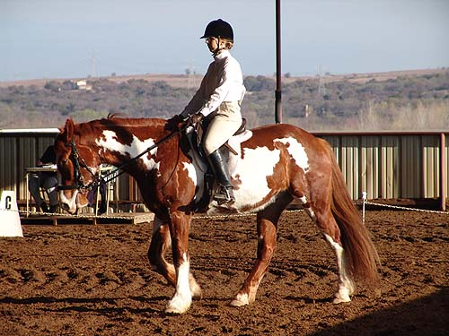

Nero's First Dressage
Show I headed out to Curragh early with Mo
and Nero. They
were both entered in the Intro classes.
With the time change, I was
grooming and tacking up in the dark for
an 8 am ride time. I needed time
to walk both of them around before mounting
up.
In the end Nero got a 62.5% and 63% for
a 2nd place ribbon and a 6th place ribbon.
His scores were high enough that he received
the Res. Champion Intro ribbon, also.
Our warm up was a bit tense, and I thought
we'd never get through the test, but when he
walked in the ring he was all business
and received very respectable scores.
Warming up as the sun was coming up.
I was nervous, Nero thought there were so many interesting things to look
at, and we were lucky to have a trainer on the ground to focus both of
us to the task at hand.
Nero stands out in a crowd. A lot
of people stopped and asked about him.
Walking around before the bell rang.
We had a nice straight entry, but
our halt was a bit crooked.
Turning past the judges stand.
Our trot circle.
Walk across the diagonal. He's good
about stretching down, but we need to work on driving forward, so he doesn't
get on the forehand.
Back to the trot. Here I'm shortening
his neck too much. He's adjustable, but not always consistent.
Now a little behind the vertical.
Now back up with the head.
He's great at halting, but nowhere
near centerline.
Ready for our next test. I think Nero
recognized Bart outside the ring with the camera.
Turning left off centerline.
The judge liked this circle.
I worked for more forward this test.
It caused a little tension and some of the scores were lower, but the judge
said she liked this test better overall.

Starting our free walk on two diagonals.
He had a bit more down and reach on
the second 1/2 of the walk.
More trotting.
He's got a lovely, swishy tail.
Preparing for the diagonal.
A little panicky at the end. I didn't
prepare enough for the turn up centerline. Plus, there's no chain at the
end of the ring, just poles on the ground. We made the turn, but it wasn't
pretty...